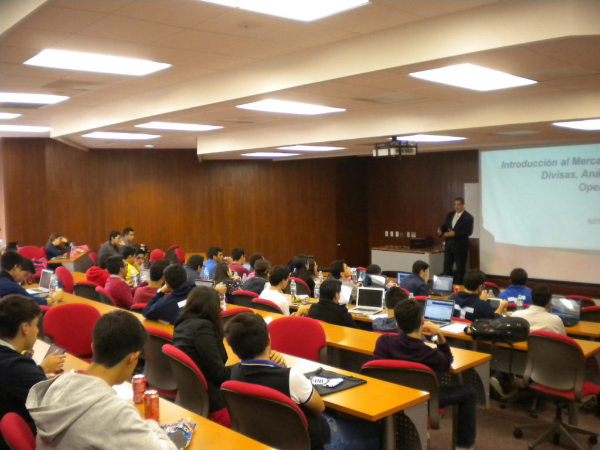

Conoce nuestras propuestas para vos
Formación en mercados financieros
Nuestros cursos están diseñados para personas que se están iniciando en la actividad financiera, y desean manejar sus propias inversiones. Con o sin experiencia, nuestros planes de estudio abarcan un amplio temario, que combinado con una práctica permanente asistida le permitirán trabajar con seguridad en el mercado elegido.
Grupo de señales
Nuestras señales de mercado se dirigen a los operadores que ya trabajan en los mercados electrónicos, y que desean optimizar su rendimiento. Las señales son enviadas en distintos momentos del día, con un plazo de ejecución corto, y abarcan divisas, materias primas e índices bursátiles